Une histoire en quatre chapitres
Du premier lundi jusqu’à l’arrivée du vrai Docteur Martin, au fil des saisons.
Tout le village te prend pour le nouveau médecin. Tu es mécanicien. Débrouille-toi !
Un jeu de médecin et d’enquête pour Android, en français. Tu interroges les patients, tu les examines du bout du doigt, tu trouves la maladie et tu choisis le bon traitement, avec l’aide secrète d’Odile, la pharmacienne.
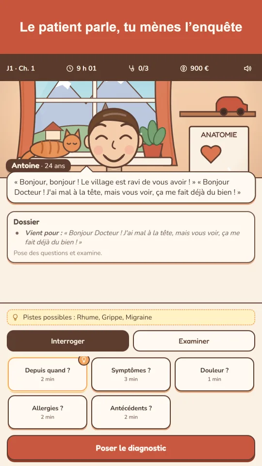
Valcombe, un village de montagne, attend un médecin depuis trois ans. Le lundi où le Docteur Martin doit enfin arriver, un autre Martin monte au village : il est mécanicien et vient travailler au garage. Sous la banderole « Bienvenue Docteur Martin ! », la fanfare joue déjà et la maire pleure de joie.
Le soir même, il avoue tout. Il a fait cinq ans de médecine avant d’arrêter, faute d’argent. Le village le supplie de rester, et Odile, la pharmacienne d’en face, pose ses conditions : il ne fait rien sans elle, et il appelle le 15 dès que c’est grave.
« Je m’en doutais, avec ce cambouis sous les ongles. »— Odile, la pharmacienne
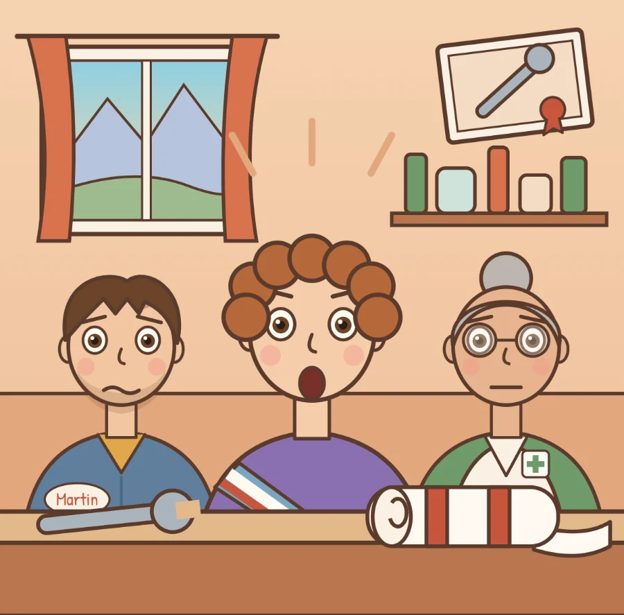
Fièvre, toux, mal de ventre, cheville tordue… Chaque patient arrive avec ses symptômes et son caractère. Pour Martin, le cœur est une pompe et la fièvre un voyant allumé sur le tableau de bord : elle signale la panne sans être la panne.
Depuis quand ? Où ça fait mal ? Des allergies ? Chaque question prend quelques minutes de la journée.
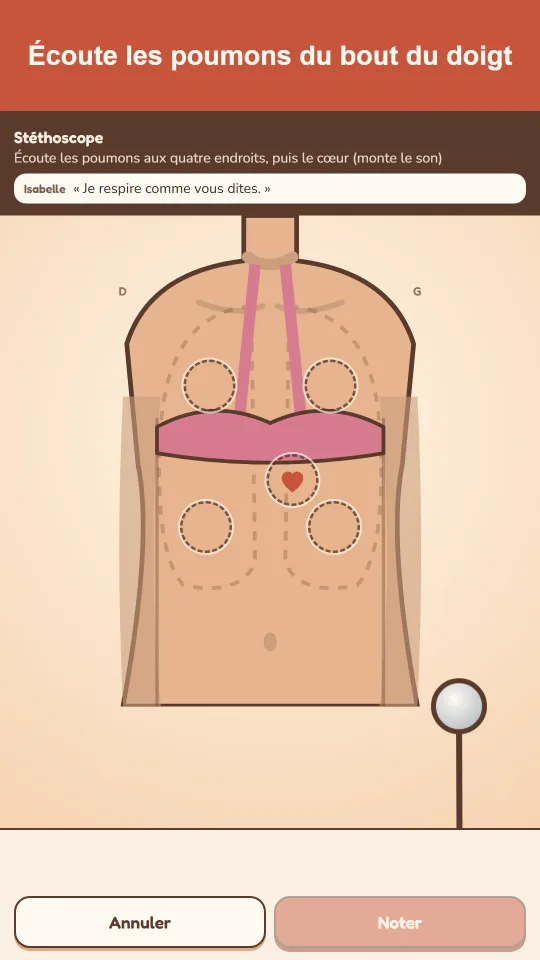
Du bout du doigt : le thermomètre, le stéthoscope sur les poumons, la lampe dans la gorge, la main sur le ventre.
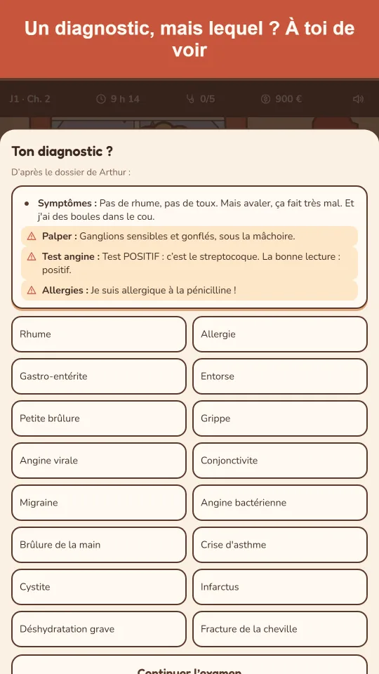
Rhume ou grippe ? Entorse ou fracture ? Et parfois, une vraie urgence : il faut appeler le 15 sans attendre.
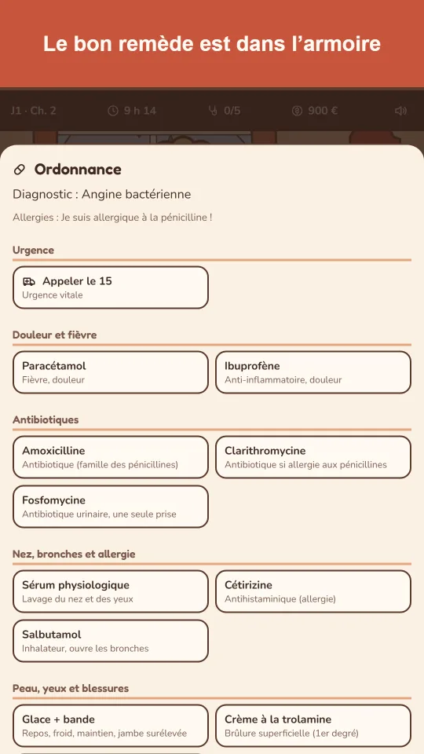
Le bon remède est dans l’armoire, ou il n’en faut pas. Le bilan te montre la route idéale et explique chaque erreur.
Du premier lundi jusqu’à l’arrivée du vrai Docteur Martin, au fil des saisons.
Trois étoiles par patient : le bon diagnostic, le bon soin, et le flair. Au bout, le diplôme de la maire.
Dès le chapitre 2, engage une infirmière. Le soir, regarde sa journée en accéléré.
Du matériel chez Odile, et des objets de collection chez Louis le brocanteur : un perroquet, une chouette, un poisson rouge…
Débutant, avec les indices de Martin, Intermédiaire, ou Expert, sans aucune aide.
Jouable d’une main, dans le train ou dans une vraie salle d’attente.
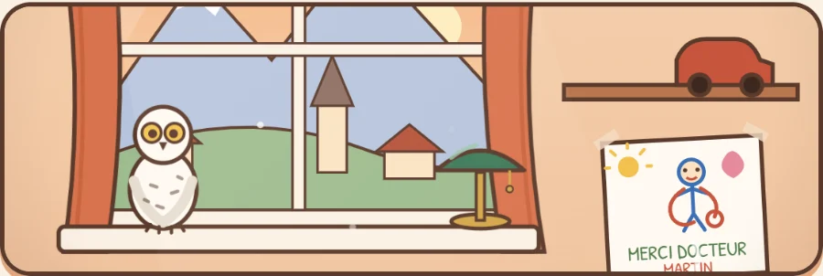
Mamie Lucienne vient chaque semaine avec une nouvelle inquiétude. Kévin, seize ans, trouve que rien n’est jamais grave. Raymond, le berger, ne descend que lorsque c’est sérieux. Gaspard Furet, le journaliste de Valcombe Info, a toujours une nouvelle de retard. Et la maire a déjà fait imprimer la banderole.
Certains patients reviennent : un village, c’est petit.
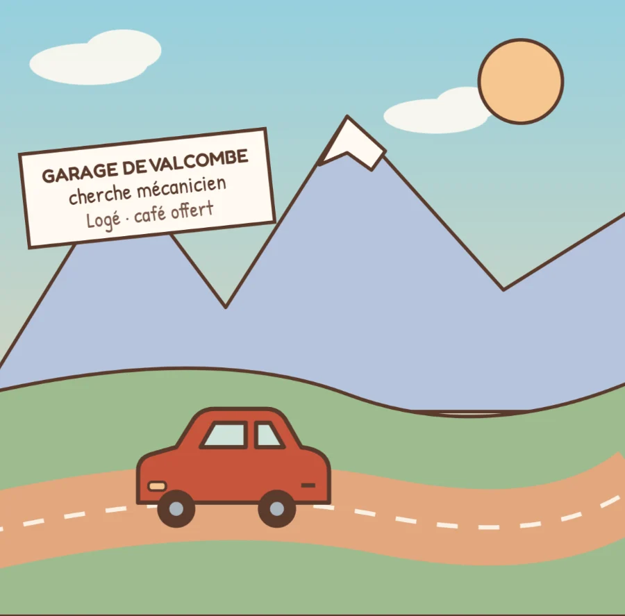
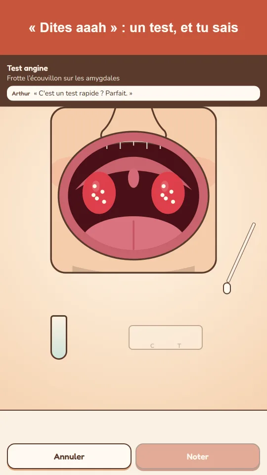
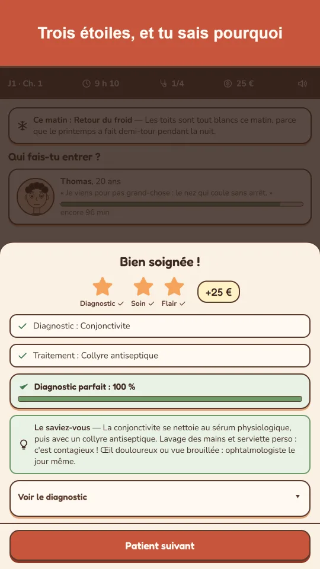
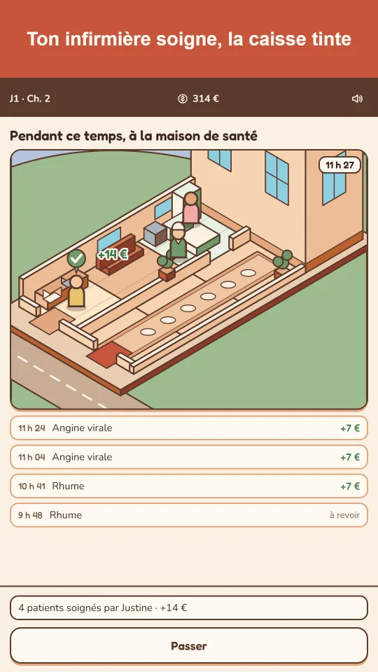
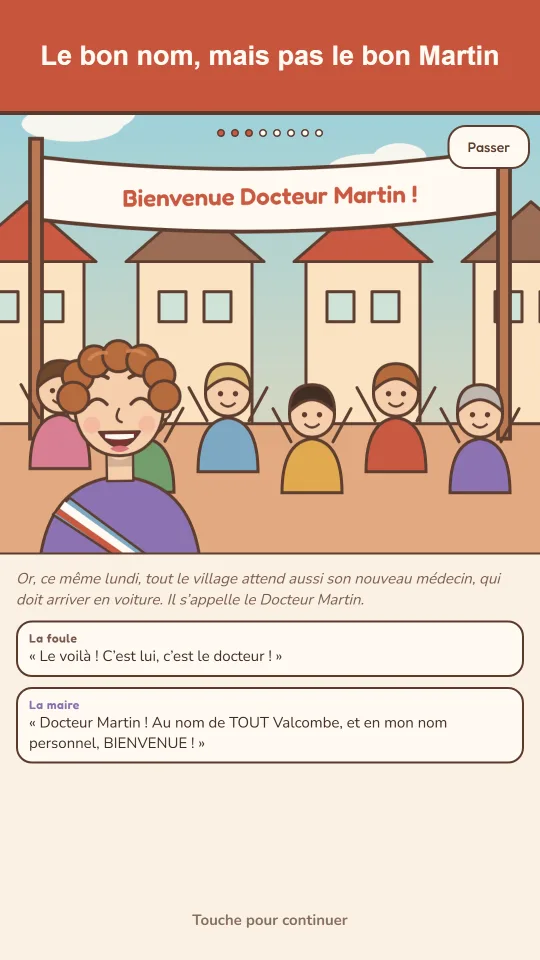
Un jeu, pas un outil médical. Doc ? simplifie beaucoup : il ne diagnostique et ne soigne personne, et ne remplace pas l’avis d’un médecin ou d’un pharmacien. En cas d’urgence, appelle le 15 (ou le 112).
Un jeu de médecin et d’enquête pour Android, drôle et tendre. Martin, mécanicien, est pris pour le nouveau médecin de Valcombe, un village de montagne. Il interroge les patients, les examine du bout du doigt, cherche le diagnostic et choisit le traitement, avec l’aide secrète d’Odile la pharmacienne.
Non. C’est un jeu : il simplifie beaucoup, ne diagnostique et ne soigne personne, et ne remplace pas l’avis d’un médecin ou d’un pharmacien. Les maladies du jeu s’appuient sur des sources médicales sérieuses, mais pour ta santé, parle à un professionnel. En cas d’urgence, appelle le 15 ou le 112.
Le jeu se paie une seule fois sur Google Play (0,99 €), et c’est tout : aucune publicité, aucun achat intégré, aucun compte à créer.
Non. Une fois installé, le jeu se joue entièrement hors ligne, dans le train comme en montagne.
Aucune. Ta partie est enregistrée seulement sur ton téléphone. Le détail est dans la politique de confidentialité.
Sur les téléphones et tablettes Android, en français. Il n’y a pas de version iPhone pour l’instant.
Une journée au cabinet dure de 5 à 10 minutes, et l’histoire se déroule en quatre chapitres. Il y a trois niveaux de difficulté : Débutant, avec des indices, Intermédiaire et Expert. Le jeu s’adresse aux 13 ans et plus.
Doc ? est fait par un développeur indépendant, seul et avec soin. Une question, un bug, une idée ? Écris à wtffilosophie@gmail.com : chaque message est lu.